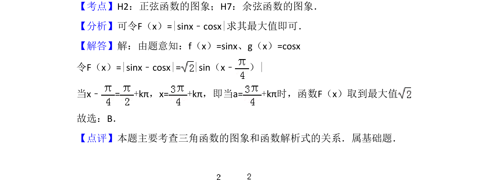

考点：正弦函数的图象 余弦函数的图象 三角函数最值
本题通过动直线与正弦、余弦函数图像交点的纵坐标之差构造绝对值函数，求该差值的最大值。

📄 原 PDF 第 5 页：
素材/真题/吉林/2008-2024·（吉林）数学高考真题/2008年高考数学试卷（理）（全国卷Ⅱ）（解析卷）.pdf
8．（5分）若动直线x=a与函数f（x）=sinx和g（x）=cosx的图象分别交于M，N 两点，则|MN|的最大值为（ ） A．1 B．C．D．2
【考点】H2：正弦函数的图象；H7：余弦函数的图象．菁优网版权所有 【分析】可令F（x）=|sinx﹣cosx|求其最大值即可． 【解答】解：由题意知：f（x）=sinx、g（x）=cosx 令F（x）=|sinx﹣cosx|=|sin（x﹣ ）| 当x﹣=+kπ，x=+kπ，即当a=+kπ时，函数F（x）取到最大值 故选：B． 【点评】本题主要考查三角函数的图象和函数解析式的关系．属基础题．